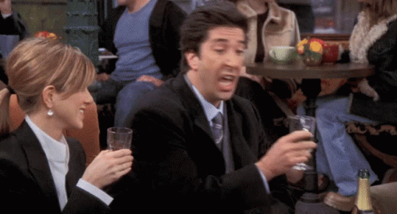
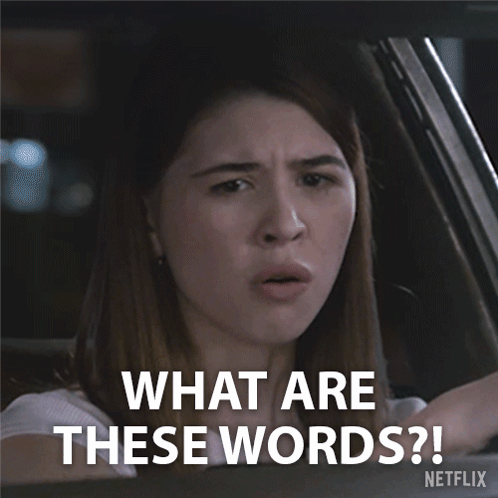
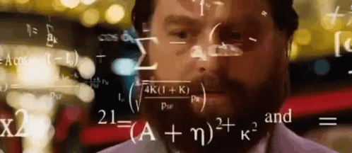
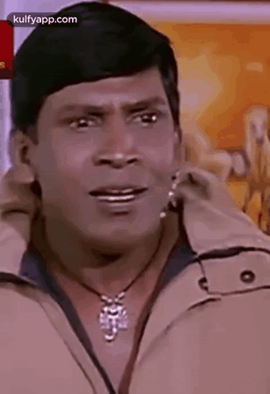
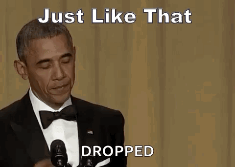
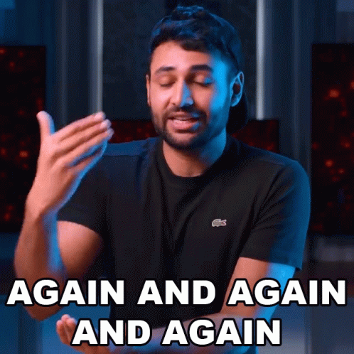
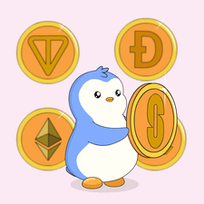
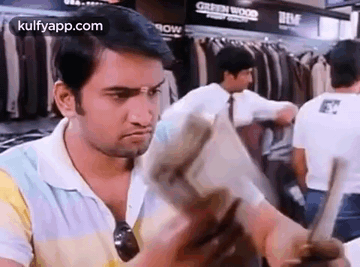
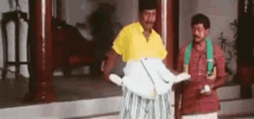

AI,
from zero.
How it actually works, in plain English.
Four building blocks.
Fundamentals
Use AI better
Build with AI
Think in the age of AI
How?

Lots of memes & GIFs

No jargon

No technical rabbit holes
The map
Each hard idea gets followed by a short live demo.
How a model works
Two words: training and inference.
What word comes next?
That's the whole trick: guess the next word.
Training builds the model. Inference uses it.
Read the library. Then do the job training.
Pre-training
Read a huge slice of the internet, books and code. Learn to predict the next word.
Base model
Knows a lot. Brilliant autocomplete. No manners, doesn't follow instructions.
Post-training
Humans show and rate good answers. It learns to be helpful, honest and safe.
Assistant
What you actually talk to: Claude, GPT, Gemini, Grok, DeepSeek…
A giant file of numbers.
Closed vs open.


Closed or open?
Renting a closed model.
How does an open model work?
Bigger file, bigger machine.
Laptop, even a phone
Strong laptop / Mac
Workstation, big GPU
Data center

Every model has a knowledge cutoff date.
One token at a time, on a loop.
1 · Read
Take in everything written so far.
2 · Score
Rate every possible next token.
3 · Pick
Choose one. A bit of randomness is allowed.
4 · Repeat
Stick it on the end and go again.
They read tokens.
characters per token
of a word per token
tokens ≈ 750 words
See your own words get chopped up.
- Open tiktokenizer.vercel.app
- Type your full name.
- Type the same sentence in English, then in another language you speak.
- Add an emoji 🎉 and watch the count.
The context window.
Stateless.

That's the app, not the model.
The app keeps notes about you and quietly slips them onto the desk at the start of each chat.
💃 Green circle = model (no memory).
Blue hexagon = the app around it (memory, search, files).
More on this in part 06.
Three hours into one chat.

Oldest gets dropped

Every turn costs more
Lost in the middle
The forgetful genius.
- Chat A: My favorite color is teal. Remember that.
- Open a new chat.
- Chat B: What's my favorite color?
- Now try it again with the app's memory turned off (or in a temporary chat).
If it "remembers", the app put a note on the desk. If it doesn't, you've met the real model.
Live demo FreeIf you forget everything else…
A model guesses the next token, over and over.
Its dials froze after training. It doesn't learn from your chats, and it has a cutoff date.
The context window is its only working memory. New chat, empty desk.
Homework: ask any AI to "Explain tokens and context windows to me like I'm 12." Up next: 04, how do I get access?
Subscription or pay per token?

Is it worth paying?

